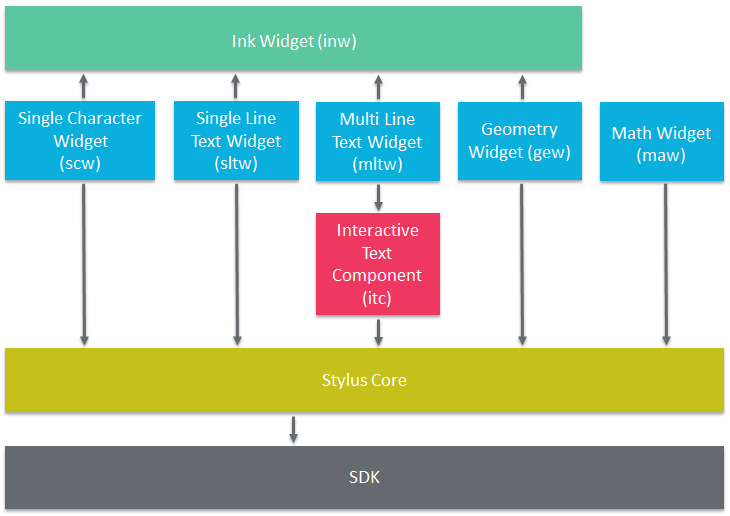
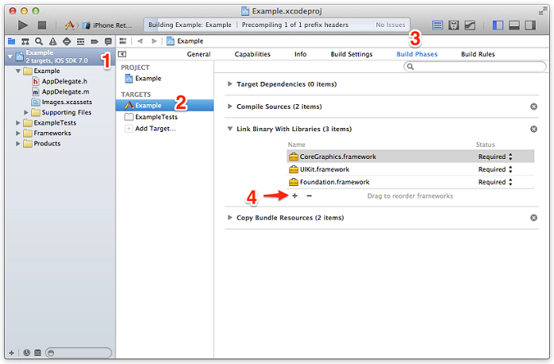

Some widgets and components are dependent on each other. If you are interested in a specific widget, know that you might have to integrate other widgets first.

To use the Multi Line Text Widget, you will need to add the following libraries:
To link against those libraries, select your project in XCode > Project Navigator, go to Build Phases then Link Binary With Libraries and add the above libraries.
See screenshot below:

For more information, read the documentation of the corresponding widget.